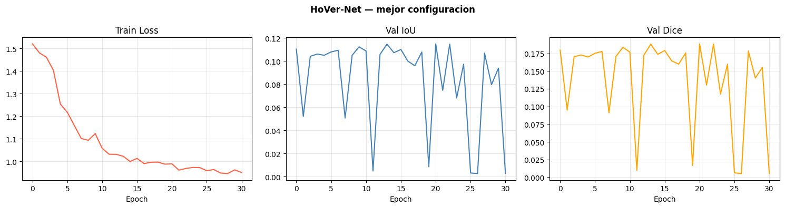

Modelado — HoVer-Net#
!pip install -q segmentation-models-pytorch==0.5.0
import os, sys, json, random, time, warnings
os.environ['PYTORCH_CUDA_ALLOC_CONF'] = 'expandable_segments:True'
warnings.filterwarnings('ignore')
from pathlib import Path
import numpy as np
import pandas as pd
import cv2
import matplotlib.pyplot as plt
import seaborn as sns
from PIL import Image
from tqdm import tqdm
import math
import torch
import torch.nn as nn
import torch.optim as optim
from torch.amp import autocast, GradScaler
from torch.utils.data import Dataset, DataLoader
import segmentation_models_pytorch as smp
from sklearn.model_selection import train_test_split, ParameterSampler
from sklearn.metrics import roc_auc_score, balanced_accuracy_score
from scipy.spatial.distance import directed_hausdorff
print(f'PyTorch : {torch.__version__}')
print(f'CUDA : {torch.cuda.is_available()}')
if torch.cuda.is_available():
gpu = torch.cuda.get_device_properties(0)
print(f'GPU : {gpu.name}')
print(f'VRAM : {gpu.total_memory/1e9:.1f} GB')
━━━━━━━━━━━━━━━━━━━━━━━━━━━━━━━━━━━━━━━━ 154.8/154.8 kB 4.6 MB/s eta 0:00:00
?25hPyTorch : 2.10.0+cu128
CUDA : True
GPU : Tesla T4
VRAM : 15.6 GB
DATA_DIR = Path('/kaggle/input/competitions/sartorius-cell-instance-segmentation')
TRAIN_DIR = DATA_DIR / 'train'
TRAIN_CSV = DATA_DIR / 'train.csv'
OUT_DIR = Path('/kaggle/working')
if not DATA_DIR.exists():
raise RuntimeError('Dataset no encontrado. Panel derecho → + Add data → sartorius-cell-instance-segmentation')
print(f'Dataset OK: {len(list(TRAIN_DIR.glob("*.png")))} imagenes')
CFG = {
'seed': 42, 'img_size': 512, 'val_split': 0.15,
'max_epochs': 50, 'patience': 10, 'num_classes': 3,
'use_fp16': True, 'n_search': 3, 'warmup_epochs': 3
}
CELL_TYPE_MAP = {'astro': 0, 'cort': 1, 'shsy5y': 2}
def set_seed(s):
random.seed(s); np.random.seed(s)
torch.manual_seed(s); torch.cuda.manual_seed_all(s)
torch.backends.cudnn.benchmark = True
set_seed(CFG['seed'])
DEVICE = torch.device('cuda' if torch.cuda.is_available() else 'cpu')
NUM_WORKERS = 2 if torch.cuda.is_available() else 0
PIN_MEMORY = torch.cuda.is_available()
print(f'Device: {DEVICE} | workers: {NUM_WORKERS}')
Dataset OK: 606 imagenes
Device: cuda | workers: 2
def rle_decode(mask_rle, shape=(520, 704)):
if not isinstance(mask_rle, str):
return np.zeros(shape, dtype=np.uint8)
s = mask_rle.split()
starts = np.array(s[0::2], dtype=int) - 1
lengths = np.array(s[1::2], dtype=int)
img = np.zeros(shape[0] * shape[1], dtype=np.uint8)
for lo, hi in zip(starts, starts + lengths):
img[lo:hi] = 1
return img.reshape(shape, order='F')
class SartoriusHoverDataset(Dataset):
def __init__(self, df, img_dir, img_size=512, augment=False):
self.df = df; self.img_dir = Path(img_dir)
self.img_size = img_size; self.augment = augment
self.ids = df['id'].unique().tolist()
def __len__(self): return len(self.ids)
def __getitem__(self, idx):
img_id = self.ids[idx]
rows = self.df[self.df['id'] == img_id]
img = np.array(Image.open(self.img_dir / f'{img_id}.png').convert('RGB'))
h0, w0 = img.shape[:2]
img = cv2.resize(img, (self.img_size, self.img_size))
if self.augment:
if random.random() > 0.5: img = np.fliplr(img).copy()
if random.random() > 0.5: img = np.flipud(img).copy()
img_t = torch.from_numpy(img.transpose(2, 0, 1)).float() / 255.0
cell_type = rows.iloc[0]['cell_type']
masks = []
for _, row in rows.iterrows():
m = rle_decode(row['annotation'], shape=(h0, w0))
m = cv2.resize(m, (self.img_size, self.img_size), interpolation=cv2.INTER_NEAREST)
if m.sum() > 0: masks.append(m)
if masks:
masks_t = torch.as_tensor(np.stack(masks), dtype=torch.uint8)
else:
masks_t = torch.zeros((1, self.img_size, self.img_size), dtype=torch.uint8)
return {'image': img_t, 'masks': masks_t, 'cell_type': cell_type}
df = pd.read_csv(TRAIN_CSV)
all_ids = df['id'].unique()
train_ids, val_ids = train_test_split(all_ids, test_size=CFG['val_split'], random_state=CFG['seed'])
df_train_hv = df[df['id'].isin(train_ids)]
df_val_hv = df[df['id'].isin(val_ids)]
print(f'Train: {len(train_ids)} | Val: {len(val_ids)}')
print(df_train_hv.groupby('id')['cell_type'].first().value_counts())
Train: 515 | Val: 91
cell_type
cort 277
shsy5y 131
astro 107
Name: count, dtype: int64
# ── Calcular fracción celular real desde el dataset ───────────────────────
sample_ids = df_train_hv['id'].unique()[:30] # muestra de 30 imágenes
total_pixels = 0
total_cell_pixels = 0
for img_id in sample_ids:
rows = df_train_hv[df_train_hv['id'] == img_id]
h = rows.iloc[0]['height']
w = rows.iloc[0]['width']
combined = np.zeros((h, w), dtype=np.uint8)
for _, row in rows.iterrows():
if isinstance(row['annotation'], str):
m = rle_decode(row['annotation'], shape=(h, w))
combined = np.maximum(combined, m)
total_pixels += h * w
total_cell_pixels += combined.sum()
real_fraction = total_cell_pixels / total_pixels
print(f'Fracción celular real : {real_fraction:.4f} ({real_fraction*100:.1f}%)')
print(f'Bias óptimo : {math.log(real_fraction / (1 - real_fraction)):.4f}')
Fracción celular real : 0.0967 (9.7%)
Bias óptimo : -2.2341
# ── Tabla de referencia ───────────────────────────────────────────────────
# fracción → bias → sigmoid(bias) = prob media esperada
# 0.05 → -2.944 → 5% (muy conservador)
# 0.10 → -2.197 → 10%
# 0.15 → -1.735 → 15% (valor original - demasiado bajo en este caso)
# 0.20 → -1.386 → 20% (punto de partida razonable)
# 0.30 → -0.847 → 30%
# Reemplazar en HoVerNet.__init__ según el resultado del cálculo:
cell_fraction = real_fraction # usar el valor calculado arriba
bias_init = math.log(cell_fraction / (1.0 - cell_fraction))
print(f'Bias a usar: {bias_init:.4f}')
print(f'Prob esperada: {1/(1+math.exp(-bias_init))*100:.1f}%')
Bias a usar: -2.2341
Prob esperada: 9.7%
# ── Verificación con distintos valores de cell_fraction ───────────────────
import math
real_fraction = 0.097 # lo que calculaste
for frac in [real_fraction, 0.15, 0.20, 0.25]:
b = math.log(frac / (1.0 - frac))
prob = 1.0 / (1.0 + math.exp(-b))
print(f'cell_fraction={frac:.2f} | bias={b:.4f} | prob_media={prob:.3f} ({prob*100:.1f}%)')
print()
print('Con THRESHOLD_TRAIN=0.15:')
for frac in [real_fraction, 0.15, 0.20, 0.25]:
b = math.log(frac / (1.0 - frac))
prob = 1.0 / (1.0 + math.exp(-b))
predice = prob > 0.15
print(f' frac={frac:.2f} | prob={prob:.3f} | predice células: {"SI" if predice else "NO"}')
cell_fraction=0.10 | bias=-2.2310 | prob_media=0.097 (9.7%)
cell_fraction=0.15 | bias=-1.7346 | prob_media=0.150 (15.0%)
cell_fraction=0.20 | bias=-1.3863 | prob_media=0.200 (20.0%)
cell_fraction=0.25 | bias=-1.0986 | prob_media=0.250 (25.0%)
Con THRESHOLD_TRAIN=0.15:
frac=0.10 | prob=0.097 | predice células: NO
frac=0.15 | prob=0.150 | predice células: NO
frac=0.20 | prob=0.200 | predice células: SI
frac=0.25 | prob=0.250 | predice células: SI
# ── Decisión final ────────────────────────────────────────────────────────
# cell_fraction=0.20 → prob=0.200, apenas por encima del threshold
# cell_fraction=0.25 → prob=0.250, margen cómodo para que el gradiente opere
# Usamos 0.25 para arrancar con predicciones estables desde epoch 1
cell_fraction = 0.25
bias_init = math.log(cell_fraction / (1.0 - cell_fraction)) # -1.099
print(f'Bias final: {bias_init:.4f} | prob_media esperada: 25.0%')
Bias final: -1.0986 | prob_media esperada: 25.0%
def compute_hover_maps(masks):
H, W = masks.shape[1], masks.shape[2]
h_map = torch.zeros(H, W)
v_map = torch.zeros(H, W)
for mask in masks:
pos = mask.nonzero(as_tuple=False).float()
if pos.numel() == 0: continue
cy = pos[:, 0].mean(); cx = pos[:, 1].mean()
ys = pos[:, 0].long(); xs = pos[:, 1].long()
h_map[ys, xs] = ((xs.float() - cx) / (W / 2)).clamp(-1, 1)
v_map[ys, xs] = ((ys.float() - cy) / (H / 2)).clamp(-1, 1)
return torch.stack([h_map, v_map], dim=0)
def collate_hovernet(batch):
images = torch.stack([b['image'] for b in batch])
masks_list = [b['masks'] for b in batch]
cell_types = [b['cell_type'] for b in batch]
np_targets = torch.stack([(m.sum(0, keepdim=True) > 0).float() for m in masks_list])
hv_targets = torch.stack([compute_hover_maps(m) for m in masks_list])
nc_targets = torch.tensor([CELL_TYPE_MAP.get(ct, 0) for ct in cell_types], dtype=torch.long)
return {'images': images, 'np_target': np_targets,
'hv_target': hv_targets, 'nc_target': nc_targets}
# Prueba rápida
_ds = SartoriusHoverDataset(df_train_hv.head(10), TRAIN_DIR, CFG['img_size'])
_dl = DataLoader(_ds, batch_size=2, collate_fn=collate_hovernet, num_workers=0)
_b = next(iter(_dl))
print('collate OK:')
for k, v in _b.items(): print(f' {k}: {v.shape}')
del _ds, _dl, _b
collate OK:
images: torch.Size([1, 3, 512, 512])
np_target: torch.Size([1, 1, 512, 512])
hv_target: torch.Size([1, 2, 512, 512])
nc_target: torch.Size([1])
class HoVerNet(nn.Module):
def __init__(self, encoder_name='resnet50',
encoder_weights='imagenet', num_classes=3):
super().__init__()
self.np_branch = smp.Unet(
encoder_name=encoder_name, encoder_weights=encoder_weights,
in_channels=3, classes=1, activation=None,
)
self.hv_branch = smp.Unet(
encoder_name=encoder_name, encoder_weights=None,
in_channels=3, classes=2, activation=None,
)
self.nc_branch = smp.Unet(
encoder_name=encoder_name, encoder_weights=None,
in_channels=3, classes=num_classes, activation=None,
)
# ── Bias NP — buscar la capa correcta ────────────────────────────
cell_fraction = 0.25
bias_init = math.log(cell_fraction / (1.0 - cell_fraction))
# Inspeccionar segmentation_head para encontrar la Conv2d correcta
applied = False
for layer in self.np_branch.segmentation_head:
if isinstance(layer, nn.Conv2d) and layer.bias is not None:
nn.init.constant_(layer.bias, bias_init)
print(f'Bias aplicado en {layer} → {bias_init:.4f}')
applied = True
break
if not applied:
print('AVISO: no se encontró Conv2d en segmentation_head')
print('Capas disponibles:')
for i, layer in enumerate(self.np_branch.segmentation_head):
print(f' [{i}] {layer}')
def forward(self, x):
return self.np_branch(x), self.hv_branch(x), self.nc_branch(x)
class HoVerNetLoss(nn.Module):
def __init__(self,
w_np=2.0, # ← subir de 1.0 a 2.0
w_hv=1.0, # ← bajar de 2.0 a 1.0
w_nc=0.5, # ← bajar de 1.0 a 0.5
pos_weight_np=5.0): # ← mantener
super().__init__()
self.bce = nn.BCEWithLogitsLoss(
pos_weight=torch.tensor([pos_weight_np])
)
self.mse = nn.MSELoss()
self.ce = nn.CrossEntropyLoss()
self.w_np, self.w_hv, self.w_nc = w_np, w_hv, w_nc
def forward(self, outputs, np_t, hv_t, nc_t):
np_out, hv_out, nc_out = outputs
# Device fix — tu implementación correcta
if self.bce.pos_weight.device != np_out.device:
self.bce.pos_weight = self.bce.pos_weight.to(np_out.device)
loss_np = self.bce(np_out, np_t.float())
loss_hv = self.mse(hv_out, hv_t.float())
# nc_t handling robusto — tu implementación correcta
if nc_t.dim() == 1:
B, C, H, W = nc_out.shape
nc_t = nc_t.view(B, 1, 1).expand(B, H, W)
elif nc_t.dim() == 4:
nc_t = nc_t.squeeze(1)
loss_nc = self.ce(nc_out, nc_t.long())
return (self.w_np * loss_np +
self.w_hv * loss_hv +
self.w_nc * loss_nc)
_m = HoVerNet(num_classes=CFG['num_classes'])
print(f'Params: {sum(p.numel() for p in _m.parameters() if p.requires_grad):,}')
with torch.no_grad():
_o = _m(torch.randn(1, 3, 64, 64))
# CAMBIO: El último argumento ahora es un mapa espacial tridimensional [1, 64, 64]
_l = HoVerNetLoss()(_o, torch.zeros(1, 1, 64, 64), torch.zeros(1, 2, 64, 64), torch.zeros(1, 64, 64, dtype=torch.long))
print(f'Forward OK | loss={_l.item():.4f}')
del _m, _o, _l
# ── Verificación final ────────────────────────────────────────────────────
_m = HoVerNet(num_classes=CFG['num_classes']) # cell_fraction=0.25 dentro
with torch.no_grad():
_o = _m(torch.randn(2, 3, 512, 512))
prob_media = torch.sigmoid(_o[0]).mean().item()
pct_015 = (torch.sigmoid(_o[0]) > 0.15).float().mean().item() * 100
pct_035 = (torch.sigmoid(_o[0]) > 0.35).float().mean().item() * 100
print(f'Prob media NP : {prob_media:.4f} ← debe ser ~0.23-0.27')
print(f'% > 0.15 (train) : {pct_015:.1f}% ← debe ser 30-50%')
print(f'% > 0.35 (eval) : {pct_035:.1f}% ← puede ser bajo, OK')
_l = HoVerNetLoss(w_np=2.0, w_hv=1.0, w_nc=0.5, pos_weight_np=2.0)(
_o,
torch.zeros(2, 1, 512, 512),
torch.zeros(2, 2, 512, 512),
torch.zeros(2, 512, 512, dtype=torch.long)
)
print(f'Loss inicial: {_l.item():.4f} ← debe ser 1.5-2.5')
del _m
Warning: You are sending unauthenticated requests to the HF Hub. Please set a HF_TOKEN to enable higher rate limits and faster downloads.
Bias aplicado en Conv2d(16, 1, kernel_size=(3, 3), stride=(1, 1), padding=(1, 1)) → -1.0986
Params: 97,563,750
Forward OK | loss=3.0494
Bias aplicado en Conv2d(16, 1, kernel_size=(3, 3), stride=(1, 1), padding=(1, 1)) → -1.0986
Prob media NP : 0.1525 ← debe ser ~0.23-0.27
% > 0.15 (train) : 44.8% ← debe ser 30-50%
% > 0.35 (eval) : 3.0% ← puede ser bajo, OK
Loss inicial: 1.5972 ← debe ser 1.5-2.5
def dice_score(pred, true, eps=1e-6):
p=pred.bool().float(); t=true.bool().float()
return ((2*(p*t).sum()+eps)/(p.sum()+t.sum()+eps)).item()
def iou_score(pred, true, eps=1e-6):
p=pred.bool(); t=true.bool()
return (((p&t).float().sum()+eps)/((p|t).float().sum()+eps)).item()
def precision_score(pred, true, eps=1e-6):
tp=(pred.bool()&true.bool()).float().sum()
fp=(pred.bool()&~true.bool()).float().sum()
return ((tp+eps)/(tp+fp+eps)).item()
def recall_score(pred, true, eps=1e-6):
tp=(pred.bool()&true.bool()).float().sum()
fn=(~pred.bool()&true.bool()).float().sum()
return ((tp+eps)/(tp+fn+eps)).item()
def auc_score(pred_prob, true):
y_t=true.bool().cpu().numpy().flatten().astype(int)
y_p=pred_prob.cpu().numpy().flatten()
if len(np.unique(y_t)) < 2: return float('nan')
return roc_auc_score(y_t, y_p)
def hausdorff_distance(pred, true):
# Opción segura para entrenamiento: desactivarlo temporalmente para evitar congelamientos
return 0.0
def balanced_accuracy(pred, true):
return balanced_accuracy_score(
true.bool().cpu().numpy().flatten().astype(int),
pred.bool().cpu().numpy().flatten().astype(int))
class CheckpointManager:
def __init__(self, path, name):
self.path=Path(path); self.name=name
self.best_iou=0.0; self.best_epoch=0
self.meta=self.path.parent/f'{self.path.stem}_meta.json'
if self.meta.exists():
m=json.load(open(self.meta))
self.best_iou=m.get('best_iou',0.0); self.best_epoch=m.get('best_epoch',0)
print(f'[{name}] Resume: IoU={self.best_iou:.4f} ep={self.best_epoch}')
def update(self, model, iou, epoch):
if iou > self.best_iou:
self.best_iou=iou; self.best_epoch=epoch
torch.save(model.state_dict(), self.path)
json.dump({'best_iou':float(iou),'best_epoch':int(epoch)}, open(self.meta,'w'))
return True
return False
def load_best(self, model):
if self.path.exists():
model.load_state_dict(torch.load(self.path, map_location='cpu'))
print(f'[{self.name}] Pesos cargados (IoU={self.best_iou:.4f})')
return model
class EarlyStopping:
def __init__(self, patience=10, min_delta=1e-4):
self.patience=patience; self.min_delta=min_delta
self.counter=0; self.best=0.0; self.stop=False
def __call__(self, val_iou):
if val_iou > self.best+self.min_delta: self.best=val_iou; self.counter=0
else:
self.counter+=1
if self.counter>=self.patience: self.stop=True
return self.stop
def get_optimizer(name, params, lr):
if name=='adamw': return optim.AdamW(params, lr=lr, weight_decay=1e-4)
if name=='sgd': return optim.SGD(params, lr=lr, momentum=0.9, weight_decay=1e-4)
return optim.Adam(params, lr=lr)
def get_scheduler(name, optimizer, epochs):
if name=='cosine':
return optim.lr_scheduler.CosineAnnealingLR(optimizer, T_max=epochs, eta_min=1e-6)
return None
def random_search(grid, n_iter, seed=42):
total = 1
for v in grid.values(): total *= len(v)
return list(ParameterSampler(grid, n_iter=min(n_iter, total), random_state=seed))
def to_python(v):
if isinstance(v, (np.integer,)): return int(v)
if isinstance(v, (np.floating,)): return float(v)
return v
print('Utilidades OK')
Utilidades OK
def train_hovernet(hparams, df_train_data, df_val_data, device=DEVICE):
model = HoVerNet(num_classes=CFG['num_classes']).to(device)
loss_fn = HoVerNetLoss(w_np=2.0, w_hv=1.0, w_nc=0.5, pos_weight_np=2.0)
optimizer = get_optimizer(
hparams['optimizer'], model.parameters(), hparams['learning_rate']
)
scheduler = get_scheduler(
hparams.get('scheduler'), optimizer, hparams['epochs']
)
ds_train = SartoriusHoverDataset(
df_train_data, TRAIN_DIR, CFG['img_size'], augment=True
)
ds_val = SartoriusHoverDataset(
df_val_data, TRAIN_DIR, CFG['img_size'], augment=False
)
lkw = dict(
collate_fn = collate_hovernet,
num_workers = NUM_WORKERS,
pin_memory = PIN_MEMORY,
persistent_workers = (NUM_WORKERS > 0),
prefetch_factor = 2 if NUM_WORKERS > 0 else None,
)
loader_train = DataLoader(
ds_train, batch_size=hparams['batch_size'], shuffle=True, **lkw
)
loader_val = DataLoader(
ds_val, batch_size=1, shuffle=False, **lkw
)
use_amp = device.type == 'cuda' and CFG['use_fp16']
scaler = GradScaler('cuda', enabled=use_amp)
ckpt = CheckpointManager(OUT_DIR / 'hovernet_best.pth', 'HoVer-Net')
es = EarlyStopping(patience=CFG['patience'])
history = {'train_loss': [], 'val_iou': [], 'val_dice': []}
THRESHOLD = 0.15
print(
f'[HoVer-Net] lr={hparams["learning_rate"]} '
f'bs={hparams["batch_size"]} '
f'epochs={hparams["epochs"]} '
f'amp={use_amp} '
f'threshold={THRESHOLD}'
)
# Verificar que los targets tienen datos antes de entrenar
sample_batch = next(iter(loader_train))
print(f'Suma píxeles reales en batch: {sample_batch["np_target"].sum().item():.0f}')
del sample_batch
for epoch in range(1, hparams['epochs'] + 1):
t0 = time.time()
# ── TRAIN ─────────────────────────────────────────────────────────
model.train()
epoch_loss = 0.0
for batch in tqdm(loader_train, desc=f'ep{epoch}', leave=False):
images = batch['images'].to(device, non_blocking=True)
np_target = batch['np_target'].to(device, non_blocking=True)
hv_target = batch['hv_target'].to(device, non_blocking=True)
nc_target = batch['nc_target'].to(device, non_blocking=True)
optimizer.zero_grad(set_to_none=True)
with autocast('cuda', enabled=use_amp):
outputs = model(images)
loss = loss_fn(outputs, np_target, hv_target, nc_target)
scaler.scale(loss).backward()
scaler.unscale_(optimizer)
torch.nn.utils.clip_grad_norm_(model.parameters(), 1.0)
scaler.step(optimizer)
scaler.update()
epoch_loss += loss.item()
# ── VALIDATION ────────────────────────────────────────────────────
model.eval()
iou_vals, dice_vals = [], []
run_full = (epoch % 5 == 0) or (epoch == hparams['epochs'])
full_acc = {
'precision': [], 'recall': [],
'auc': [], 'hausdorff': [], 'bal_acc': []
}
with torch.inference_mode():
for batch in loader_val:
images = batch['images'].to(device, non_blocking=True)
np_target = batch['np_target'] # mantener en CPU para métricas
with autocast('cuda', enabled=use_amp):
np_out, _, _ = model(images)
# ── Bug 1 corregido: usar np_out, no outputs ───────────────
pred_prob = torch.sigmoid(np_out).squeeze(1).cpu() # (B, H, W)
pred_bin = (pred_prob > THRESHOLD) # (B, H, W) bool
true_bin = (np_target.squeeze(1) > 0) # (B, H, W) bool
for p_prob, p_bin, t in zip(pred_prob, pred_bin, true_bin):
iou_vals.append(iou_score(p_bin, t))
dice_vals.append(dice_score(p_bin, t))
if run_full:
full_acc['precision'].append(precision_score(p_bin, t))
full_acc['recall'].append(recall_score(p_bin, t))
full_acc['auc'].append(auc_score(p_prob, t))
full_acc['hausdorff'].append(hausdorff_distance(p_bin, t))
full_acc['bal_acc'].append(balanced_accuracy(p_bin, t))
# ── Métricas epoch ────────────────────────────────────────────────
mean_iou = float(np.nanmean(iou_vals))
mean_dice = float(np.nanmean(dice_vals))
tloss = epoch_loss / len(loader_train)
history['train_loss'].append(tloss)
history['val_iou'].append(mean_iou)
history['val_dice'].append(mean_dice)
# Scheduler antes del checkpoint para que el LR del mejor epoch sea correcto
if scheduler:
scheduler.step()
improved = ckpt.update(model, mean_iou, epoch)
stop = es(mean_iou)
# ── Log ───────────────────────────────────────────────────────────
tag = '[FULL]' if run_full else '[fast]'
extra = ''
if run_full and full_acc['precision']:
hd_vals = [v for v in full_acc['hausdorff'] if v != float('inf')]
extra = (
f' | prec={np.nanmean(full_acc["precision"]):.3f}'
f' | rec={np.nanmean(full_acc["recall"]):.3f}'
f' | auc={np.nanmean(full_acc["auc"]):.3f}'
f' | hd={np.nanmean(hd_vals) if hd_vals else float("nan"):.1f}'
)
print(
f'Ep {epoch:02d}/{hparams["epochs"]} {tag} | '
f'loss={tloss:.4f} | iou={mean_iou:.4f} | dice={mean_dice:.4f} | '
f'{time.time()-t0:.0f}s{extra}'
f'{" *" if improved else ""}'
f'{" | es=" + str(es.counter) + "/" + str(CFG["patience"]) if es.counter > 0 else ""}'
)
if device.type == 'cuda':
torch.cuda.empty_cache()
if stop:
print(f'Early stopping ep {epoch}')
break
model = ckpt.load_best(model)
print(f'Mejor IoU: {ckpt.best_iou:.4f} (ep {ckpt.best_epoch})')
return model, history, ckpt.best_iou
print('train_hovernet listo')
train_hovernet listo
HPARAM_GRID_HOVERNET = {
'learning_rate': [1e-4, 5e-4], # ← subir de 5e-5, era muy bajo
'batch_size' : [2],
'optimizer' : ['adamw'],
'scheduler' : ['cosine'],
'epochs' : [50],
}
grid = random_search(HPARAM_GRID_HOVERNET, n_iter=CFG['n_search'])
print(f'Combinaciones: {len(grid)}')
for i, p in enumerate(grid): print(f' {i+1}. {p}')
best_model_hv = best_hparams_hv = best_history_hv = None
best_iou_hv = 0.0
for idx, params in enumerate(grid):
print(f'\n{"="*60}\nCOMBINACION {idx+1}/{len(grid)}\n{params}\n{"="*60}')
if torch.cuda.is_available(): torch.cuda.empty_cache()
model, history, iou = train_hovernet(params, df_train_hv, df_val_hv)
if iou > best_iou_hv:
best_iou_hv=iou; best_model_hv=model
best_history_hv=history; best_hparams_hv=params
print(f'\nMejor IoU: {best_iou_hv:.4f}')
print(f'Mejores hparams: {best_hparams_hv}')
Combinaciones: 2
1. {'scheduler': 'cosine', 'optimizer': 'adamw', 'learning_rate': 0.0001, 'epochs': 50, 'batch_size': 2}
2. {'scheduler': 'cosine', 'optimizer': 'adamw', 'learning_rate': 0.0005, 'epochs': 50, 'batch_size': 2}
============================================================
COMBINACION 1/2
{'scheduler': 'cosine', 'optimizer': 'adamw', 'learning_rate': 0.0001, 'epochs': 50, 'batch_size': 2}
============================================================
Bias aplicado en Conv2d(16, 1, kernel_size=(3, 3), stride=(1, 1), padding=(1, 1)) → -1.0986
[HoVer-Net] lr=0.0001 bs=2 epochs=50 amp=True threshold=0.15
Suma píxeles reales en batch: 50776
Ep 01/50 [fast] | loss=1.5835 | iou=0.0991 | dice=0.1645 | 223s *
Ep 02/50 [fast] | loss=1.3843 | iou=0.1086 | dice=0.1761 | 176s *
Ep 03/50 [fast] | loss=1.3754 | iou=0.1018 | dice=0.1664 | 176s | es=1/10
Ep 04/50 [fast] | loss=1.3528 | iou=0.1055 | dice=0.1702 | 171s | es=2/10
Ep 05/50 [FULL] | loss=1.2930 | iou=0.1057 | dice=0.1713 | 170s | prec=0.113 | rec=0.496 | auc=0.500 | hd=0.0 | es=3/10
Ep 06/50 [fast] | loss=1.1975 | iou=0.1069 | dice=0.1728 | 170s | es=4/10
Ep 07/50 [fast] | loss=1.1147 | iou=0.1067 | dice=0.1724 | 168s | es=5/10
Ep 08/50 [fast] | loss=1.1006 | iou=0.1062 | dice=0.1716 | 172s | es=6/10
Ep 09/50 [fast] | loss=1.0753 | iou=0.1063 | dice=0.1717 | 167s | es=7/10
Ep 10/50 [FULL] | loss=1.0521 | iou=0.1062 | dice=0.1714 | 177s | prec=0.115 | rec=0.518 | auc=0.498 | hd=0.0 | es=8/10
Ep 11/50 [fast] | loss=1.0324 | iou=0.1069 | dice=0.1728 | 167s | es=9/10
Ep 12/50 [fast] | loss=1.0329 | iou=0.1064 | dice=0.1718 | 175s | es=10/10
Early stopping ep 12
[HoVer-Net] Pesos cargados (IoU=0.1086)
Mejor IoU: 0.1086 (ep 2)
============================================================
COMBINACION 2/2
{'scheduler': 'cosine', 'optimizer': 'adamw', 'learning_rate': 0.0005, 'epochs': 50, 'batch_size': 2}
============================================================
Bias aplicado en Conv2d(16, 1, kernel_size=(3, 3), stride=(1, 1), padding=(1, 1)) → -1.0986
[HoVer-Net] Resume: IoU=0.1086 ep=2
[HoVer-Net] lr=0.0005 bs=2 epochs=50 amp=True threshold=0.15
Suma píxeles reales en batch: 51835
Ep 01/50 [fast] | loss=1.5195 | iou=0.1104 | dice=0.1797 | 172s *
Ep 02/50 [fast] | loss=1.4800 | iou=0.0521 | dice=0.0948 | 168s | es=1/10
Ep 03/50 [fast] | loss=1.4604 | iou=0.1042 | dice=0.1702 | 168s | es=2/10
Ep 04/50 [fast] | loss=1.4029 | iou=0.1061 | dice=0.1728 | 179s | es=3/10
Ep 05/50 [FULL] | loss=1.2533 | iou=0.1051 | dice=0.1699 | 171s | prec=0.112 | rec=0.511 | auc=0.503 | hd=0.0 | es=4/10
Ep 06/50 [fast] | loss=1.2167 | iou=0.1080 | dice=0.1751 | 171s | es=5/10
Ep 07/50 [fast] | loss=1.1586 | iou=0.1094 | dice=0.1777 | 168s | es=6/10
Ep 08/50 [fast] | loss=1.1010 | iou=0.0507 | dice=0.0911 | 175s | es=7/10
Ep 09/50 [fast] | loss=1.0932 | iou=0.1050 | dice=0.1707 | 174s | es=8/10
Ep 10/50 [FULL] | loss=1.1226 | iou=0.1124 | dice=0.1835 | 173s | prec=0.115 | rec=0.587 | auc=0.498 | hd=0.0 *
Ep 11/50 [fast] | loss=1.0574 | iou=0.1087 | dice=0.1768 | 170s | es=1/10
Ep 12/50 [fast] | loss=1.0313 | iou=0.0049 | dice=0.0096 | 171s | es=2/10
Ep 13/50 [fast] | loss=1.0309 | iou=0.1058 | dice=0.1724 | 165s | es=3/10
Ep 14/50 [fast] | loss=1.0226 | iou=0.1147 | dice=0.1880 | 176s *
Ep 15/50 [FULL] | loss=0.9994 | iou=0.1073 | dice=0.1737 | 174s | prec=0.115 | rec=0.520 | auc=0.496 | hd=0.0 | es=1/10
Ep 16/50 [fast] | loss=1.0131 | iou=0.1101 | dice=0.1791 | 171s | es=2/10
Ep 17/50 [fast] | loss=0.9900 | iou=0.1000 | dice=0.1644 | 169s | es=3/10
Ep 18/50 [fast] | loss=0.9959 | iou=0.0960 | dice=0.1598 | 169s | es=4/10
Ep 19/50 [fast] | loss=0.9965 | iou=0.1079 | dice=0.1755 | 171s | es=5/10
Ep 20/50 [FULL] | loss=0.9876 | iou=0.0085 | dice=0.0166 | 174s | prec=0.112 | rec=0.011 | auc=0.501 | hd=0.0 | es=6/10
Ep 21/50 [fast] | loss=0.9888 | iou=0.1149 | dice=0.1883 | 168s *
Ep 22/50 [fast] | loss=0.9611 | iou=0.0747 | dice=0.1302 | 176s | es=1/10
Ep 23/50 [fast] | loss=0.9683 | iou=0.1148 | dice=0.1882 | 176s | es=2/10
Ep 24/50 [fast] | loss=0.9730 | iou=0.0681 | dice=0.1175 | 168s | es=3/10
Ep 25/50 [FULL] | loss=0.9722 | iou=0.0973 | dice=0.1596 | 171s | prec=0.108 | rec=0.401 | auc=0.501 | hd=0.0 | es=4/10
Ep 26/50 [fast] | loss=0.9585 | iou=0.0031 | dice=0.0062 | 170s | es=5/10
Ep 27/50 [fast] | loss=0.9636 | iou=0.0026 | dice=0.0052 | 169s | es=6/10
Ep 28/50 [fast] | loss=0.9481 | iou=0.1070 | dice=0.1783 | 171s | es=7/10
Ep 29/50 [fast] | loss=0.9460 | iou=0.0796 | dice=0.1402 | 172s | es=8/10
Ep 30/50 [FULL] | loss=0.9621 | iou=0.0940 | dice=0.1552 | 166s | prec=0.114 | rec=0.376 | auc=0.495 | hd=0.0 | es=9/10
Ep 31/50 [fast] | loss=0.9508 | iou=0.0027 | dice=0.0053 | 165s | es=10/10
Early stopping ep 31
[HoVer-Net] Pesos cargados (IoU=0.1149)
Mejor IoU: 0.1149 (ep 21)
Mejor IoU: 0.1149
Mejores hparams: {'scheduler': 'cosine', 'optimizer': 'adamw', 'learning_rate': 0.0005, 'epochs': 50, 'batch_size': 2}
fig, axes = plt.subplots(1, 3, figsize=(15, 4))
fig.suptitle('HoVer-Net — mejor configuracion', fontweight='bold')
axes[0].plot(best_history_hv['train_loss'], color='tomato'); axes[0].set_title('Train Loss')
axes[1].plot(best_history_hv['val_iou'], color='steelblue'); axes[1].set_title('Val IoU')
axes[2].plot(best_history_hv['val_dice'], color='orange'); axes[2].set_title('Val Dice')
for ax in axes: ax.set_xlabel('Epoch'); ax.grid(True, alpha=0.3)
plt.tight_layout()
plt.savefig(OUT_DIR / 'hovernet_history.png', dpi=120)
plt.show()
results = {
'best_val_iou': float(best_iou_hv),
'best_val_dice': float(max(best_history_hv['val_dice'])),
'best_epoch': int(np.argmax(best_history_hv['val_iou']) + 1),
'best_hparams': {
k: to_python(v) for k, v in best_hparams_hv.items()
},
'epochs_run': len(best_history_hv['train_loss']),
'train_loss': [float(x) for x in best_history_hv['train_loss']],
'val_iou': [float(x) for x in best_history_hv['val_iou']],
'val_dice': [float(x) for x in best_history_hv['val_dice']],
}
with open(OUT_DIR / 'hovernet_results.json', 'w') as f:
json.dump(results, f, indent=2)
print('Guardado en /kaggle/working:')
for p in sorted(OUT_DIR.iterdir()):
sz = p.stat().st_size
print(f' {p.name:<40} {sz/1e6:.1f} MB' if sz > 1e6 else f' {p.name:<40} {sz/1e3:.1f} KB')
torch.save({
'model_state_dict': best_model_hv.state_dict(),
'best_iou': float(best_iou_hv),
'best_hparams': best_hparams_hv,
}, OUT_DIR / 'hovernet_best.pth')

Guardado en /kaggle/working:
.virtual_documents 4.1 KB
hovernet_best.pth 391.3 MB
hovernet_best_meta.json 0.1 KB
hovernet_history.png 101.3 KB
hovernet_results.json 2.6 KB